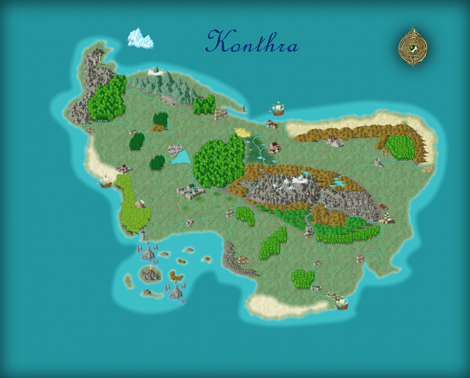

An atlas of the known world
The Island of Konthra
Explore the land, its settlements and the people who call it home.

The people behind the story
Dramatis Personae
Records gathered by a scholar of Konthra, for those who walk its roads.
No records match. Nothing has been approved for publication yet, or your filters are too narrow.